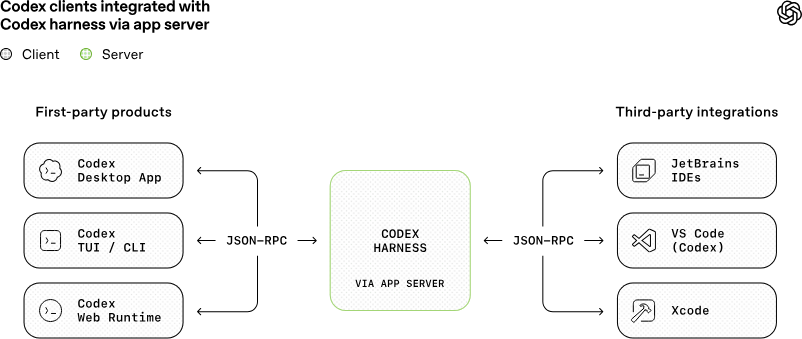
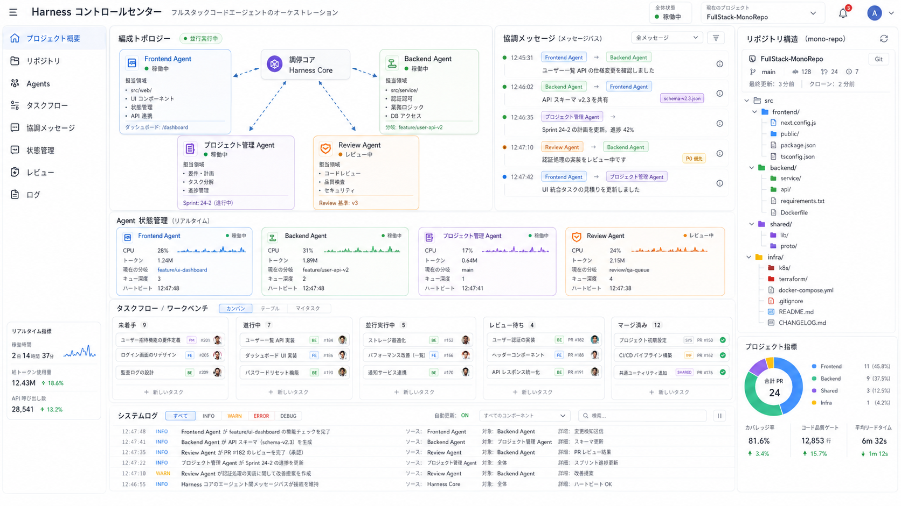

01 / CURSOR × OPENAI
OpenAI、Cursorへのモデル提供契約を終了へ
11月12日を移行期限として提案。以後はBYOK、またはCodex IDE拡張が選択肢。
Yahoo!ニュース ↗エージェントの実行基盤を、
自分たちの UI とワークフローへ。
社内朝会 · 2026.09.01 · 5 MIN
Multi-Agent は重要な応用の一つ。
Harness 自体は、Agent loop、Thread、認証、Tool、Sandbox まで含む、より広い仕組みです。


課金については、ChatGPTの料金プランに含まれる形になります。
ユーザー基盤が大きく、コミュニティも活発なので、Agentの移植コストが低い。
また、Context管理やSandbox、境界設計、ルール設計といった基盤部分も安定しています。
11月12日を移行期限として提案。以後はBYOK、またはCodex IDE拡張が選択肢。
Yahoo!ニュース ↗顕微鏡、分注装置、ロボットアームなどを標準ドライバ経由で安全に操作。現在は研究プレビュー。
Anthropic 公式 ↗リアルタイム転写はサブ秒級。録音音声では話者分離と単語単位タイムスタンプに対応。
Google 公式 ↗生成AI / LLMアプリの開発・統合・運用に必要な基礎を証明する、Associateレベルの認定資格。
NVIDIA 公式ページ ↗情報確認日：2026.08.30
In this environment, the companies that will win are those that can balance operational discipline with strategic flexibility.
Senior Partner, Strategy Practice — Global Investment Forum 2026
For questions or a deeper discussion of these findings, please reach out to the research team.
Download Full Reportresearch@company.com · www.company.com